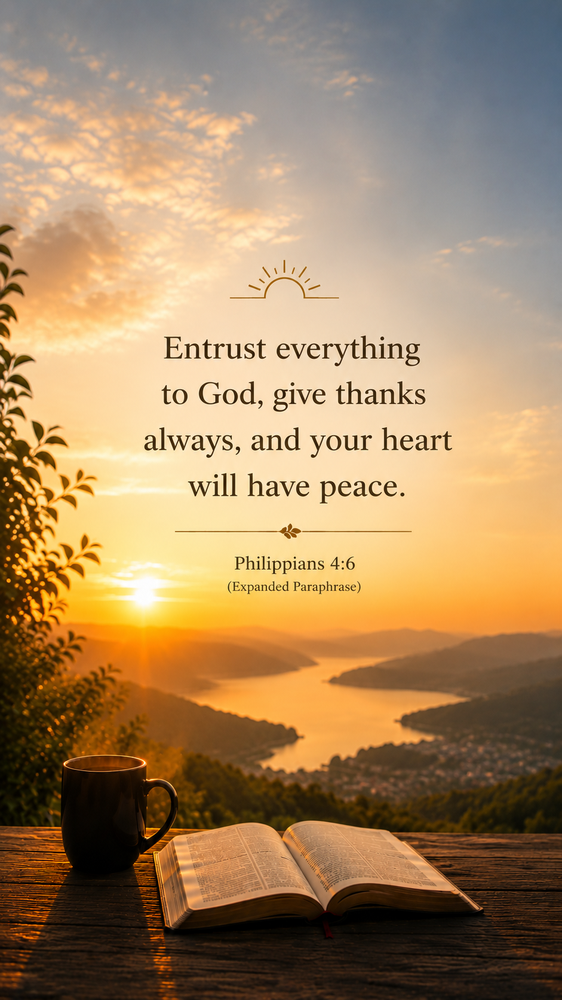

A gentle reminder to entrust our worries, fears, and burdens to God.
Created to bring a little calm, warmth, and peace into everyday life. May these wallpapers remind you that you do not have to carry everything alone.

Life can become very heavy sometimes.
The mind keeps racing, the heart grows tired, and even rest can feel difficult to find.
But you do not have to solve everything today.
You do not have to carry every burden perfectly.
There is grace in slowing down for a moment.
Take a deep breath.
Step away from the noise for a little while.
Watch the morning light, listen to gentle music, drink a warm cup of coffee or tea,
and allow your soul to rest.
Even in uncertain seasons, peace can still quietly exist.
Remember that God loves you and He cares about you.
He wants to carry your burdens and worries.
If you would like to, you can join us in prayer below.
Dear God,
Please bring peace to the hearts that are carrying worry, fear, anxiety, or weariness.
Remind us that we are deeply loved and never alone.
Give us strength for today, wisdom for tomorrow, and rest for our souls.
Help us entrust our burdens into Your hands,
and fill our hearts with peace that quietly steadies us through every season.
Amen.
{kind=link}